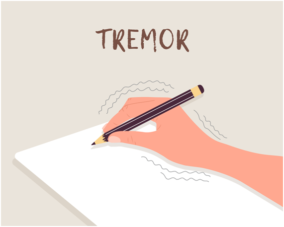
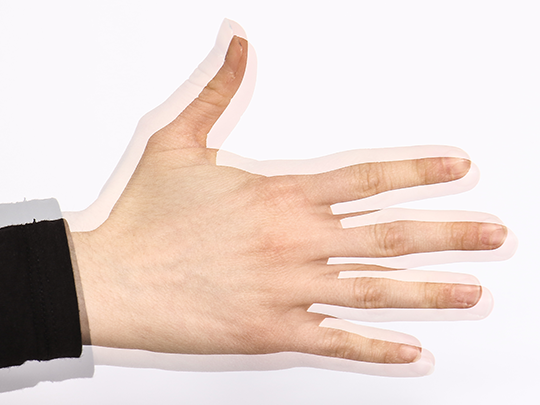

O que é?
Tremor essencial é um distúrbio neurológico do movimento que geralmente afeta as mãos, mas que também pode afetar a cabeça, a voz e as pernas, sendo muitas vezes confundido com a Doença de Parkinson. Não é uma doença fatal mas prejudica a qualidade de vida das pessoas que, passam a ter dificuldades com tarefas comuns do cotidiano, como o ato de segurar uma xícara ou um talher, digitar, escrever à mão, podendo ainda, perder a capacidade de dirigir ou ir ao trabalho.
Principais características:
A principal característica é o tremor rítmico que ocorre durante um movimento voluntário como, por exemplo, levar um copo de água à boca ou manter uma posição, como deixar a mão ou o braço esticado ou levantado. Na maioria dos casos, o sintoma mais comum é o tremor, mas pessoas de idade mais avançada podem apresentar outras características, como a perda de coordenação e equilíbrio, e até risco de perda de audição associada ao distúrbio.
O que causa o tremor essencial?
A verdadeira causa do TE ainda não é conhecida. Mas, admite-se que seja uma doença de circuitos cerebrais, provavelmente relacionada a anomalia de canais iônicos, que altera diretamente a atividade elétrica cerebral nos circuitos motores, incluindo o tálamo e córtex cerebral - causando, assim, o tremor durante o movimento. O tálamo é uma estrutura profunda no cérebro que participa do controle dos movimentos e da atividade muscular.
Estudos mais recentes afirmam que tremor essencial envolve uma disfunção GABAérgica (neurotransmissor predominantemente inibitório no sistema nervoso) principalmente no cerebelo e tronco cerebral, possivelmente causada por neurodegeneração lenta nessas regiões com perda de células de Purkinje (tipo de célula de extrema importância para o funcionamento do cerebelo), o que provavelmente induz o tremor no circuito entre o tálamo e o córtex cerebral.
Aparentemente, a degeneração das células de Purkinje (no cerebelo) e dos neurônios GABAérgicos vizinhos (células em cesto - basket cells) provoca neuroplasticidade deletéria em suas conexões, resultando em reorganização das conexões neuronais dentro do cerebelo. A reorganização lenta do circuito cerebelar local altera padrões de oscilação nas projeções cerebelo-talâmicas que induzem alterações do controle fino do movimento exercido pelas redes tálamo-corticais. Provavelmente por isso que alguns pacientes apresentam com o tempo além de piora do tremor, também ataxia e alterações de equilíbrio.
O TE é genético-familiar em mais de 50% dos casos. Diferente do Mal de Parkinson, onde os casos genéticos são mais raros. Uma criança nascida de um pai com tremor essencial terá até 50% de possibilidade de herdar o gene responsável. Porém, ela pode nunca apresentar os tremores propriamente ditos. Embora o tremor seja mais comum em idosos - e os sintomas se tornam mais pronunciados com a idade -, ele não faz parte do processo de envelhecimento natural.

Orientação de tratamento
Medicação: Os medicamentos são frequentemente prescritos para ajudar a reduzir a gravidade do tremor. Os beta-bloqueadores, como o propranolol, e os anticonvulsivantes, como a primidona, são comumente utilizados para esse fim. Em alguns casos, benzodiazepínicos, como o clonazepam, também podem ser prescritos.
Terapia Física e Ocupacional: Um fisioterapeuta pode ensinar exercícios específicos que podem ajudar a melhorar o controle motor e a coordenação. Um terapeuta ocupacional pode fornecer técnicas e adaptações para realizar atividades cotidianas com mais facilidade, apesar do tremor.
Estimulação Cerebral Profunda (DBS): Em casos graves e refratários ao tratamento medicamentoso, a estimulação cerebral profunda pode ser considerada. Nesse procedimento, eletrodos são implantados em áreas específicas do cérebro e conectados a um dispositivo semelhante a um marca-passo, que emite impulsos elétricos para ajudar a controlar o tremor.
Intervenção Cirúrgica: Em alguns casos selecionados, a cirurgia de ablação por ultrassom focado guiado por ressonância magnética (FUS) pode ser uma opção. Este procedimento não invasivo utiliza ondas sonoras para destruir áreas específicas do cérebro responsáveis pelo tremor.
Estilo de Vida Saudável: Manter um estilo de vida saudável pode ajudar a reduzir a gravidade do tremor. Isso inclui manter uma dieta equilibrada, praticar atividade física regularmente, evitar o consumo excessivo de álcool e cafeína, e gerenciar o estresse.
Os dois tipos de tremor incluem:
Tremor de ação – um movimento voluntário como levar um copo até a boca
Tremor postural – manter uma posição, de forma voluntária e contra a gravidade, como deixar um braço ou mão estendida ou levantada
A maioria das pessoas com tremor essencial tem sintomas tanto do tremor postural quanto do tremor de ação.
Dicas de Cuidados:
Crianças:
- Rotina estruturada: Estabeleça uma rotina diária previsível para reduzir o estresse e a ansiedade, o que pode exacerbarr os tremores.
- Evite estimulantes: Reduza ou elimine a ingestão de alimentos e bebidas que contenham cafeína, já que podem aumentar os tremores.
- Apoio emocional: Ofereça suporte emocional e educacional à criança, explicando sobre o tremor essencial de forma adequada à sua compreensão.
Adolescentes e adultos:
- Gerenciamento do estresse: Ensine técnicas de relaxamento, como meditação, respiração profunda e yoga, para ajudar a reduzir a intensidade dos tremores.
- Alimentação saudável: Promova uma dieta equilibrada, rica em frutas, vegetais, grãos integrais e proteínas magras, para fornecer nutrientes essenciais ao corpo.
- Descanso adequado: Incentive a manutenção de uma boa higiene do sono, garantindo horas suficientes de descanso todas as noites.
Idosos :
- Hidroterapia: Participar de aulas de hidroginástica ou natação pode ser benéfico para fortalecer os músculos e reduzir os tremores, aproveitando a flutuação na água.
- Alongamento: Realize sessões regulares de alongamento suave para melhorar a flexibilidade e reduzir a rigidez muscular associada ao tremor.
Lembrando sempre que é essencial adaptar o plano de cuidados às necessidades individuais de cada paciente, levando em consideração a gravidade dos sintomas, a presença de condições médicas concomitantes e as preferências pessoais. A colaboração multidisciplinar com profissionais de saúde, como fisioterapeutas, terapeutas ocupacionais e nutricionistas, também pode ser fundamental para oferecer um cuidado abrangente e eficaz para pessoas com tremor essencial.